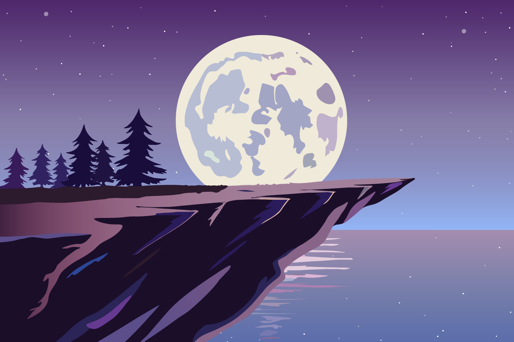
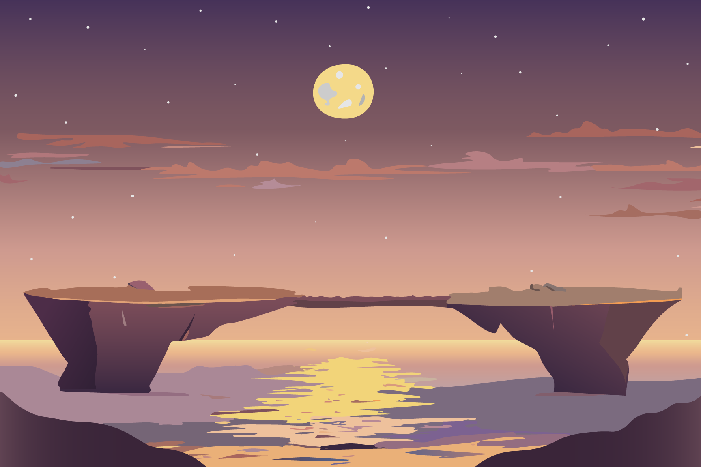
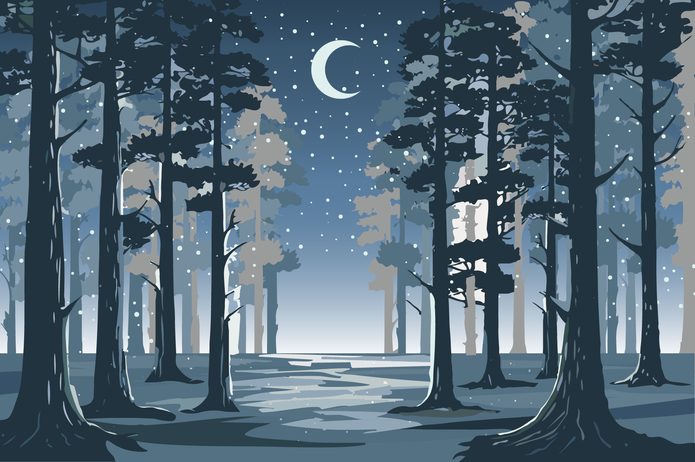
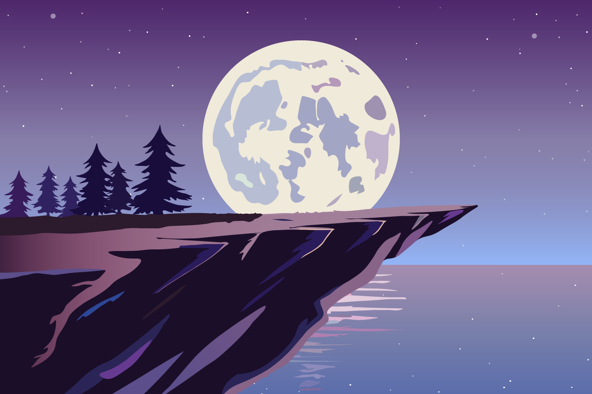
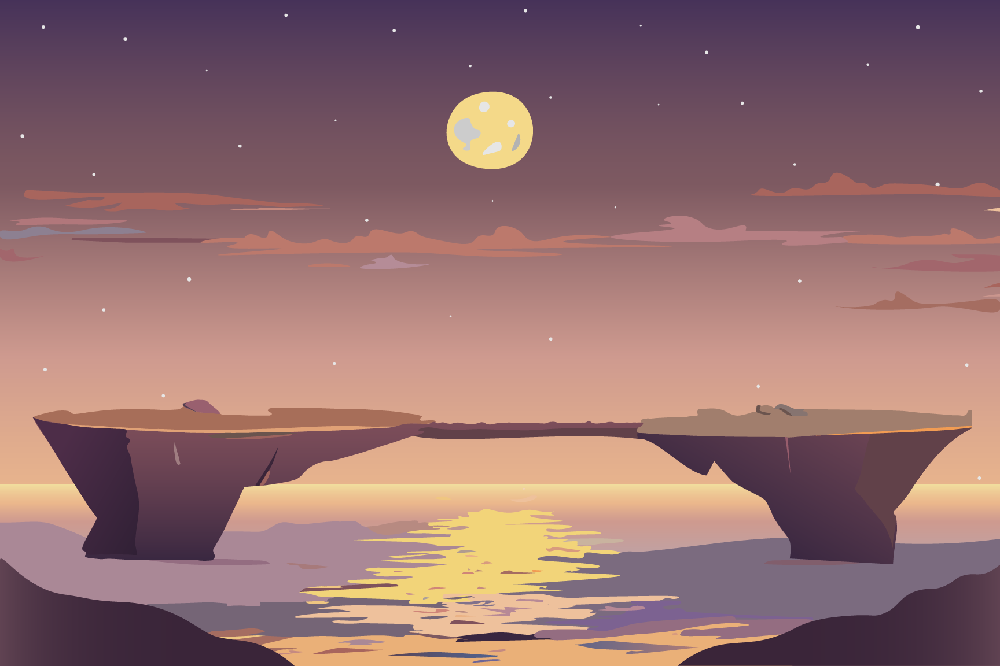
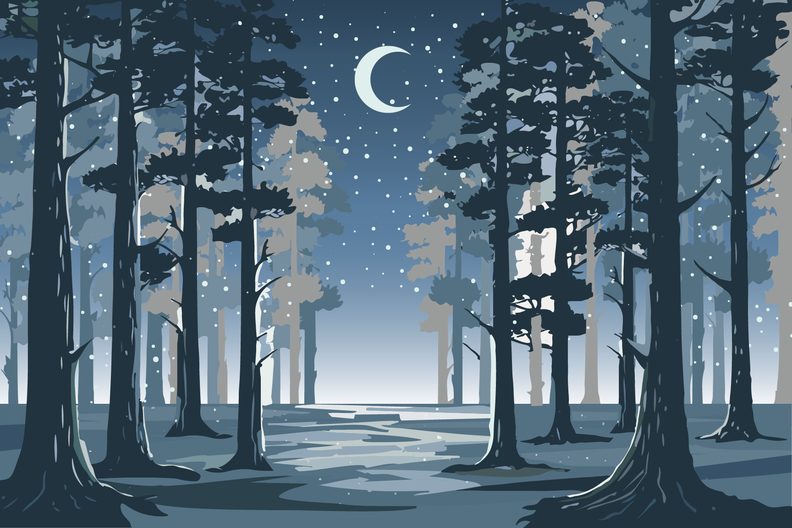

The Wolf’s Journey: Walking Through Dreamscapes
2024, Animation & Prints
 







The Wolf’s Journey: Walking Through Dreamscapes is a piece where I
step out of reality and see life through the eyes of my spirit
animal, the wolf. In this project, I imagine myself walking through
surreal, illustrated landscapes that let me explore emotions and
thoughts I don’t often share in my day-to-day life. Each scene
represents a different part of my inner world—from peaceful moments
to chaotic ones, showing how I feel when navigating life.
The wolf’s journey is my journey. I use it to explore what it means
to find balance in the midst of uncertainty and to keep moving
forward, even when things feel overwhelming. By creating these
dreamlike settings, I can process my reality in a way that feels
safe and free, as if I’m letting my imagination lead the way. It
reflects how I imagine myself when I need an escape: resilient,
curious, and open to wherever the path leads.
Through simple animation and ambient sounds, the piece has a
continuous flow, capturing an endless journey through my mind. I
hope that as people watch, they can take a moment to escape
too—experiencing the feeling of walking through dreamscapes, seeing
life from a different angle, and finding peace in the unknown.